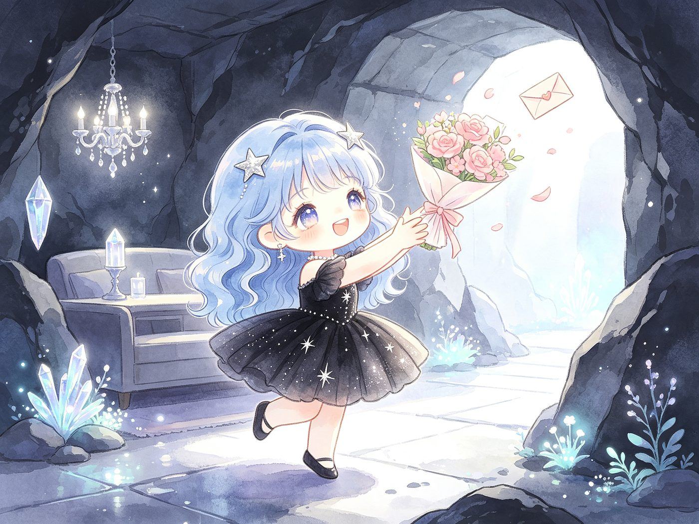
第 2 页
收到邀请
地下公主正在城堡里擦她的星星灯。忽然，隧道口飘来一束粉粉的花，花上还系着一封短信——是蔷薇公主和玫瑰公主写的：「请来我们家做客吧！花园里的花都开啦！」地下公主一下子跳了起来。
地下公主来做客 · 星种子遇阳光疯长大捣乱
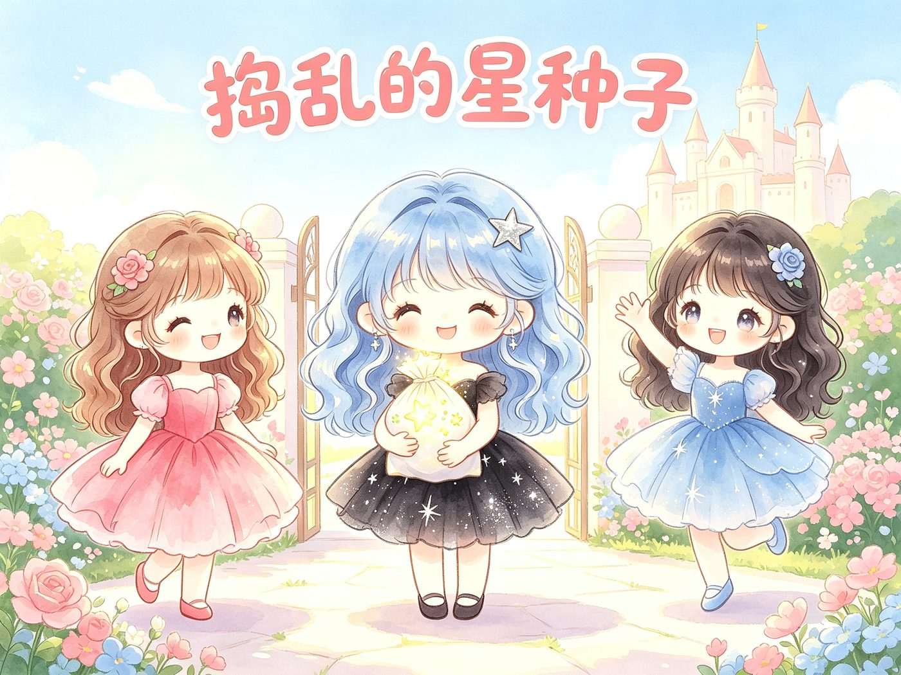
地下公主第一次来地面做客，她带着最宝贝的星种子想变出最美的花园——可星种子遇见阳光，竟然全乱套啦！
马卡龙柔和画风 · 水彩晕染 · 圆润软萌 · 高清适合打印
穿着粉红色蓬蓬裙，浅棕色微卷长发上别着粉色小花。温柔又调皮，这一次在家门口等着从地底来的小客人，乱子来了也不生气，只说「我们一起收拾」。
穿着蓝色蓬蓬裙，浅黑色软卷发，眼睛亮晶晶。这一次她最爱拍手欢呼，还在乱成一团时递出一颗糖，说「我们人多力量大」。
穿着缀满银色星光的黑色蓬蓬裙，浅蓝色软卷发上别着银色小星星。她第一次离开地底、第一次见到阳光，抱着满满一袋最宝贝的星种子，想送给朋友一份最棒的惊喜。
白色毛茸茸的云朵小妖怪，圆圆大眼睛、蓝色小脸、带小翅膀。一闻到热闹就手痒，鼓起腮帮一吹，好好的花园差点被它吹翻；不过最后它也学会了帮忙。
翻开故事，看地下公主第一次踏上阳光花园，和好朋友们一起收拾一场亮晶晶的乱子

地下公主正在城堡里擦她的星星灯。忽然，隧道口飘来一束粉粉的花，花上还系着一封短信——是蔷薇公主和玫瑰公主写的：「请来我们家做客吧！花园里的花都开啦！」地下公主一下子跳了起来。
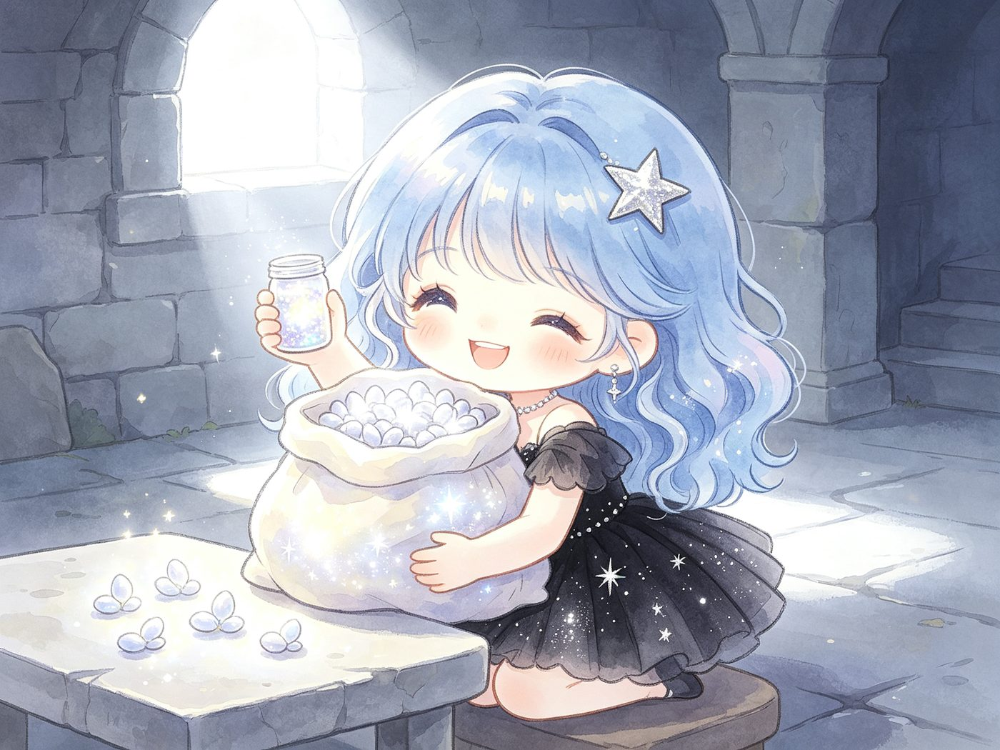
「要送好朋友什么呢？」水晶灯？姐妹家有太阳呀。地下公主想了好久，最后抱出满满一袋子星种子——这是地底城堡里最会发光的小花种子，她还偷装了一小罐萤光花粉。「哇，她们一定会最喜欢！」她把礼物抱在怀里，得意极了。
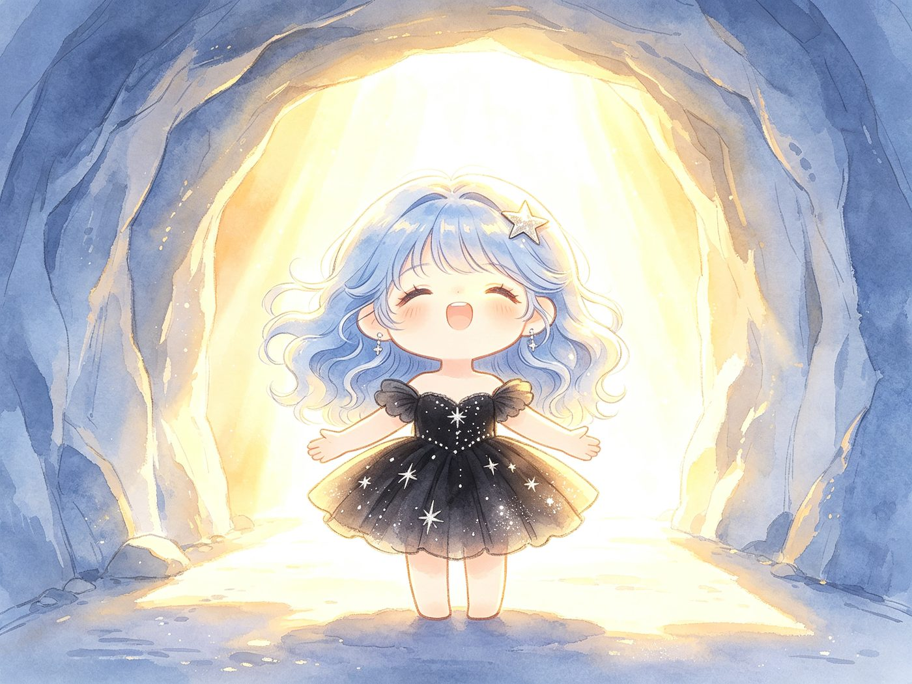
地下公主第一次穿过那条长长的隧道。她踮起脚——哇！暖融融的阳光「哗」地一下洒在她脸上！这不是水晶灯的光，也不是星光，是真正的、暖得让人想笑的太阳！她眯起眼睛，张开双臂，风把她的头发和裙摆都吹了起来。
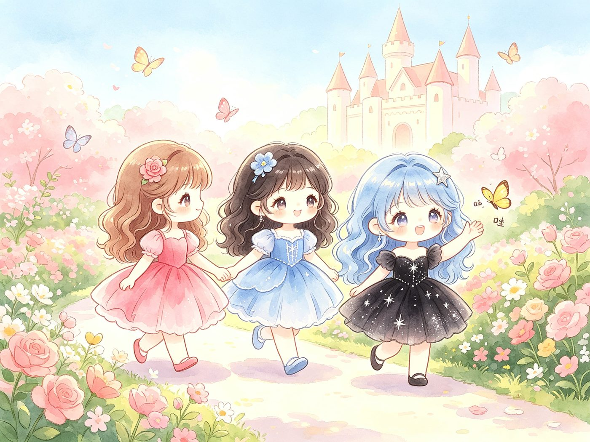
蔷薇公主和玫瑰公主早就等在花园门口啦。她们拉着地下公主的手逛花园：看蝴蝶飞、闻玫瑰香、踩软软的草地。地下公主看什么都觉得新鲜，每一样都「哇」个不停，笑得眼睛都弯了。
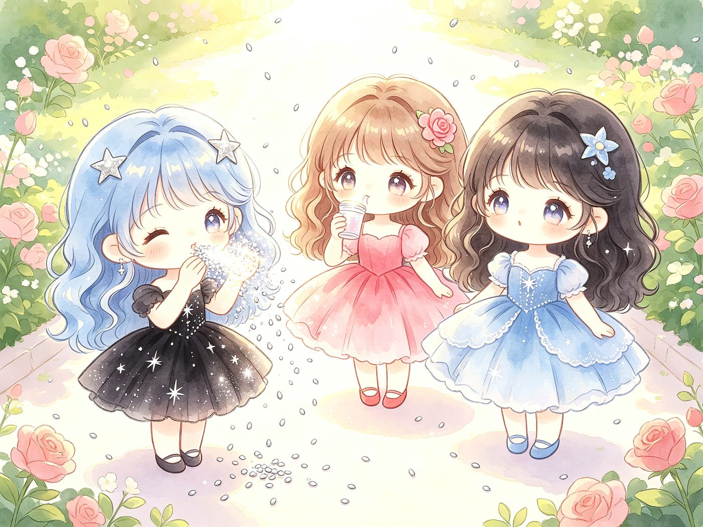
下午茶还没开始，地下公主就等不及了。她抱着满满一袋星种子跑到花园中间，「哗」地一下全撒了出去，又举起小罐子吹亮萤光花粉：「看呀！我要给姐姐们变一个全世界最亮的魔法花园！」
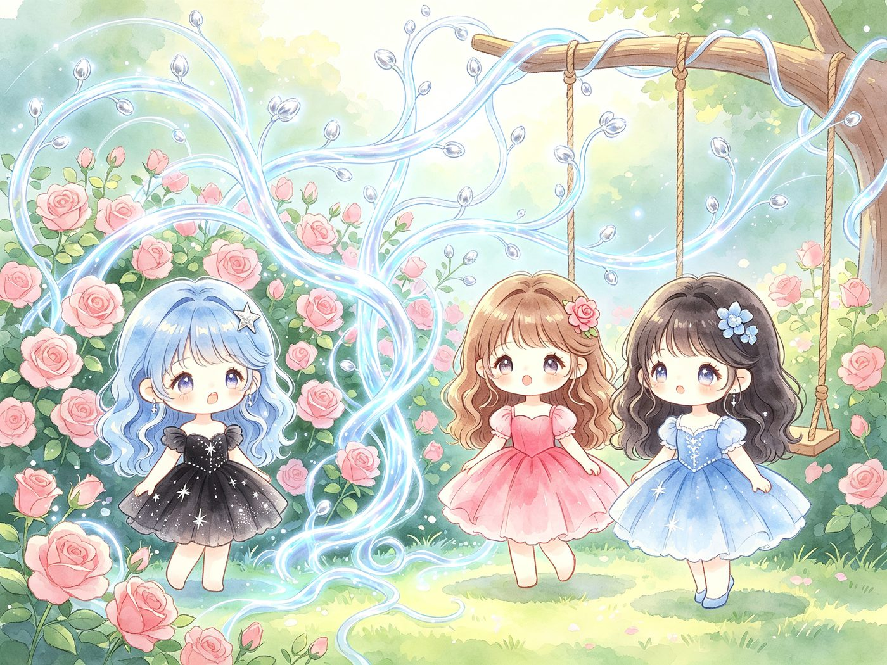
可是呀，地底的星种子从来没见过这么暖的阳光。它们一沾到阳光，不但没开出温柔的小花，反而「唰唰唰」地疯长起来！银色的发光藤蔓一下子窜得老高，缠住了玫瑰花丛，还绕上了秋千。
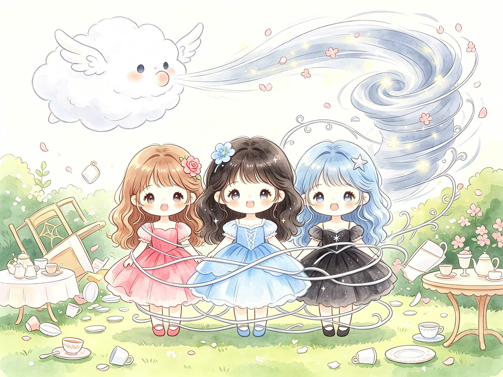
就在这时候，闻到热闹的小风妖怪飘了过来。它一看满地会发光的藤蔓，闲不住的毛病又犯了，鼓起腮帮子「呼——」地吹了一大口风！刚长出来的藤被吹得横飞，花瓣卷成了旋风，下午茶的小桌子「哗啦」翻了，藤一下子缠到了两位小公主身上。
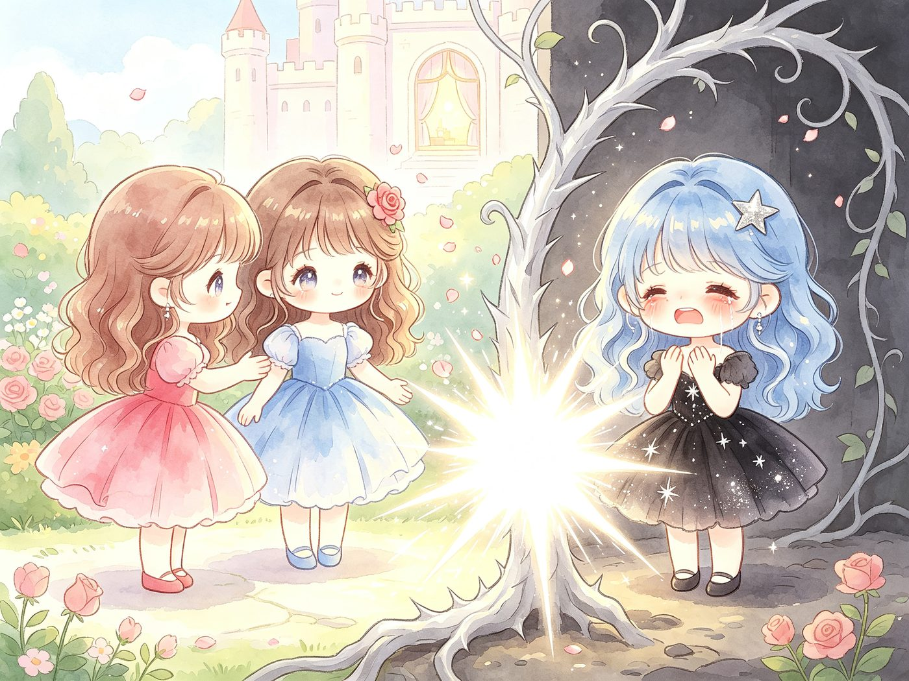
「糟了糟了！」地下公主急得想把藤蔓收回来。可是她越慌，星光魔法越不听话——双手一抬，反而爆出一大团亮亮的星光！藤蔓「呼」地又窜高了一大截，发光的小花瓣飘呀飘，都钻进城堡的窗户里去了。她的眼圈一下子红了。
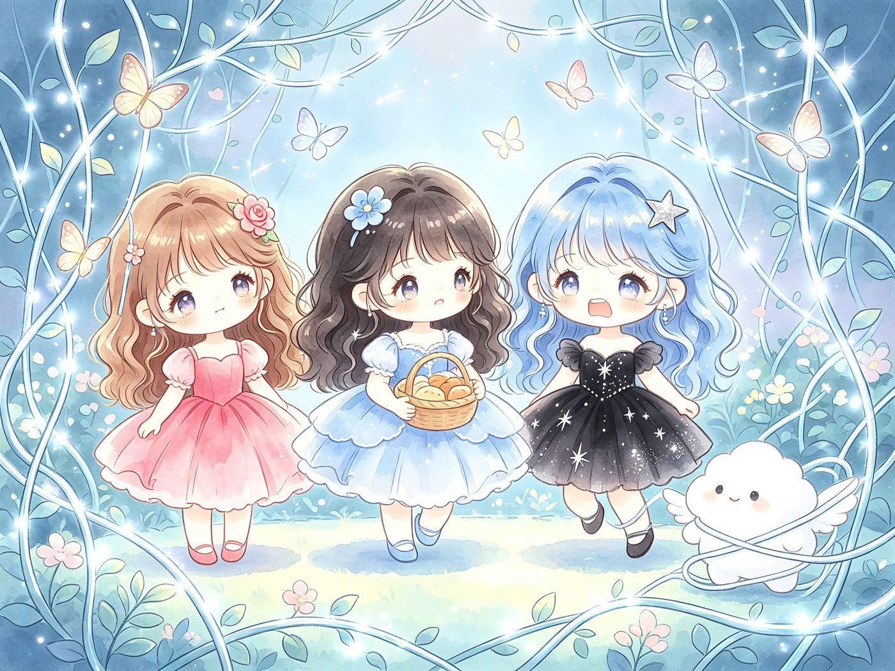
这下可乱套啦！整座花园全是银色的藤蔓，蔷薇公主的发饰被藤挂住了，玫瑰公主抱着点心篮团团转，蝴蝶都被发光藤吓得乱飞，连风妖怪自己也被藤缠住了半片小翅膀。地下公主站在中间，急得直跺脚。
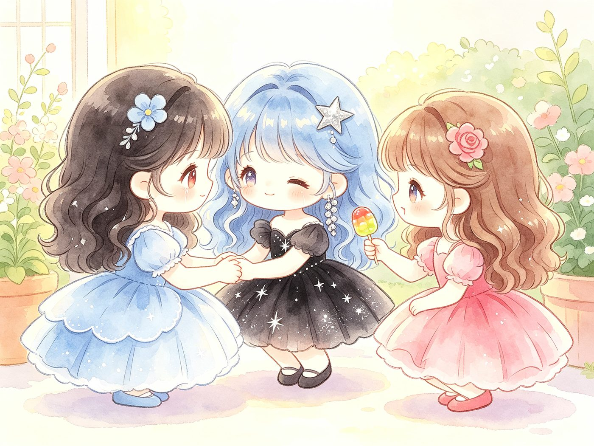
可是，蔷薇公主一点也没有生气。她轻轻蹲下来，握住地下公主的手说：「别害怕，我们三个一起收拾！」玫瑰公主也递过来一颗糖，笑着说：「对呀，我们人多力量大！」地下公主抬起红红的眼睛，点了点头。
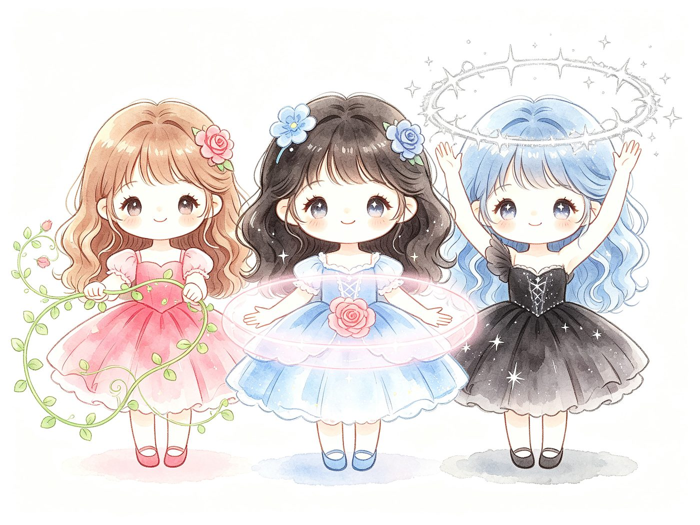
三个小公主并肩站好。蔷薇公主甩出柔韧的蔷薇藤，把乱缠的银藤一绺一绺拢回来；玫瑰公主撑起香香的玫瑰结界，把乱飞的花瓣兜成一束；地下公主深深吸一口气，双手向上托——一圈温柔的星光罩住藤墙，把疯长的藤蔓轻轻引向花园角落。
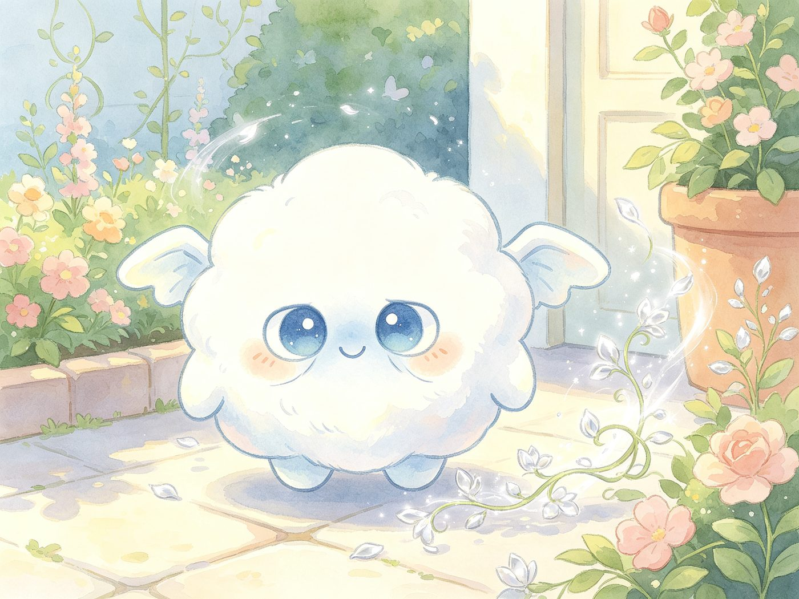
风妖怪看着大家都在认真收拾，自己却闯了祸，不好意思地低下了头。它收起调皮的大风，改成轻轻的小风，把飘得到处都是的小花瓣和藤梢，一瓣一瓣、一根一根，都帮忙归拢到了角落。
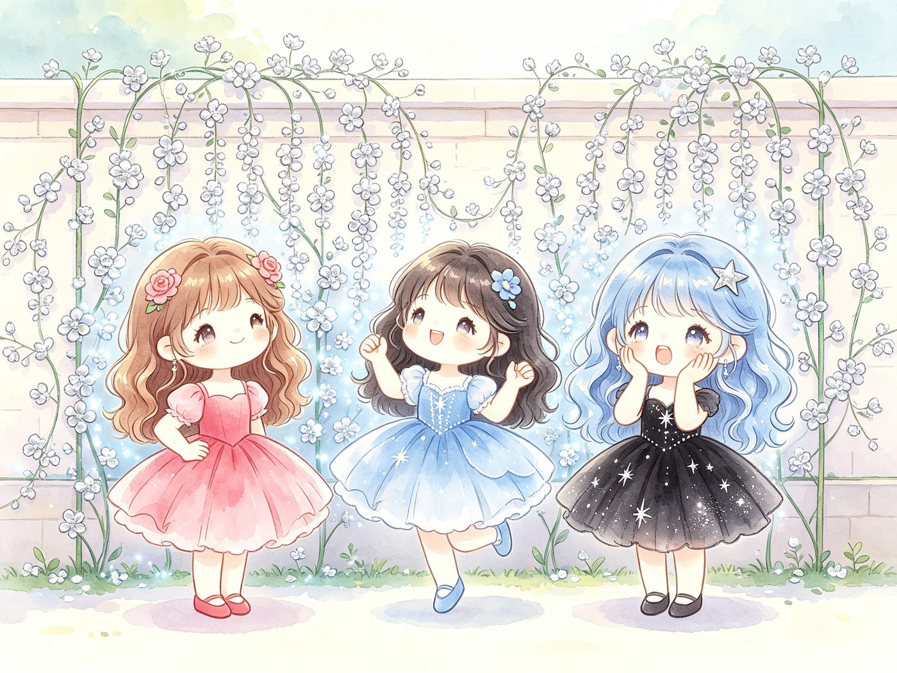
被拢到角落的星藤呀，没有被拔掉，反而顺着围墙慢慢爬呀爬。在地下公主星光的呵护下，它越长越漂亮，长成了一整面银色的花墙，再也不乱跑啦。
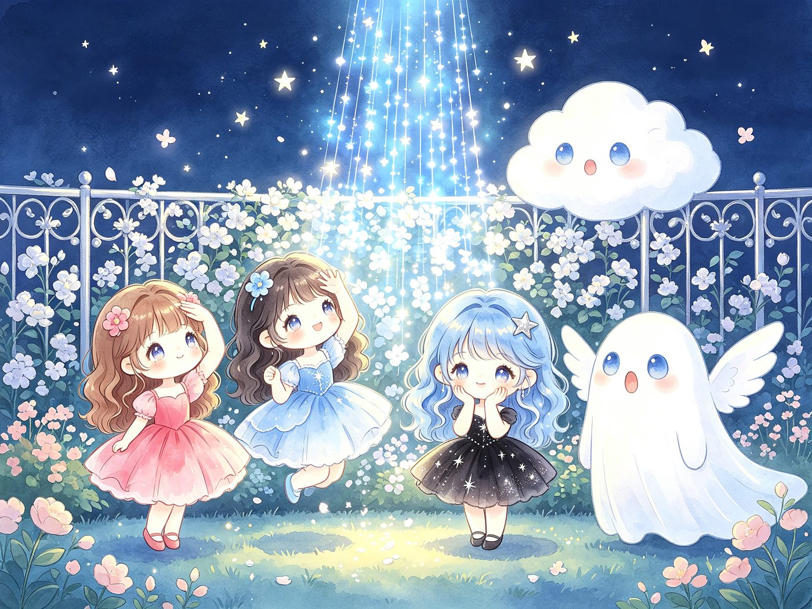
太阳慢慢落山了。天黑下来，那面银色花墙「叮——」地一下亮起温柔的光！整面墙变成了一条会发光的星光花瀑，飞散的小花瓣变成了夜空中一闪一闪的小星星。四个人都看呆了：「哇——好漂亮呀！」
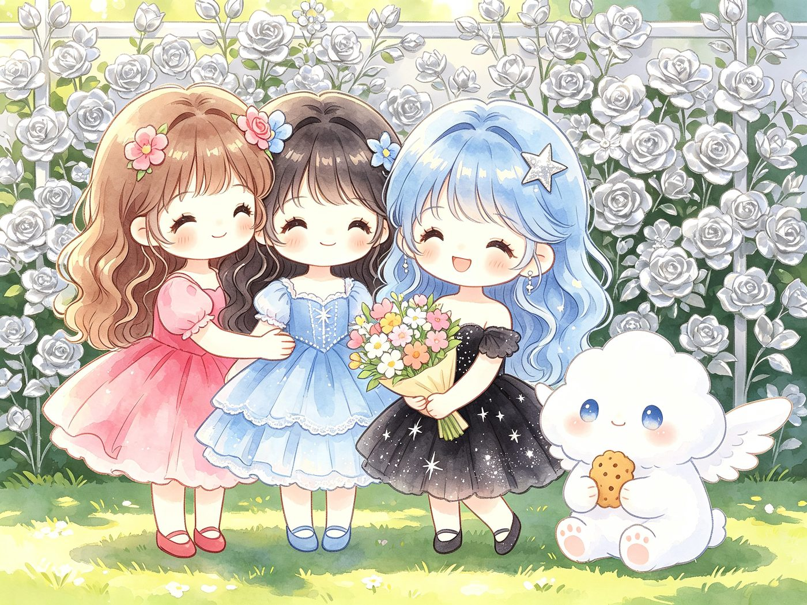
从那以后，蔷薇公主家的花园白天是银色的藤蔓花墙，晚上是一闪一闪的星海。地下公主学会了：魔法要慢慢使，送礼物要有分寸。风妖怪呢，又乖乖蹭在点心篮旁边。四个好朋友约定：地面和地底，永远互相串门！
完
捣乱的星种子讲完啦——好心办的乱子，只要大家一起收拾，也能变成花园里最美的一角哦